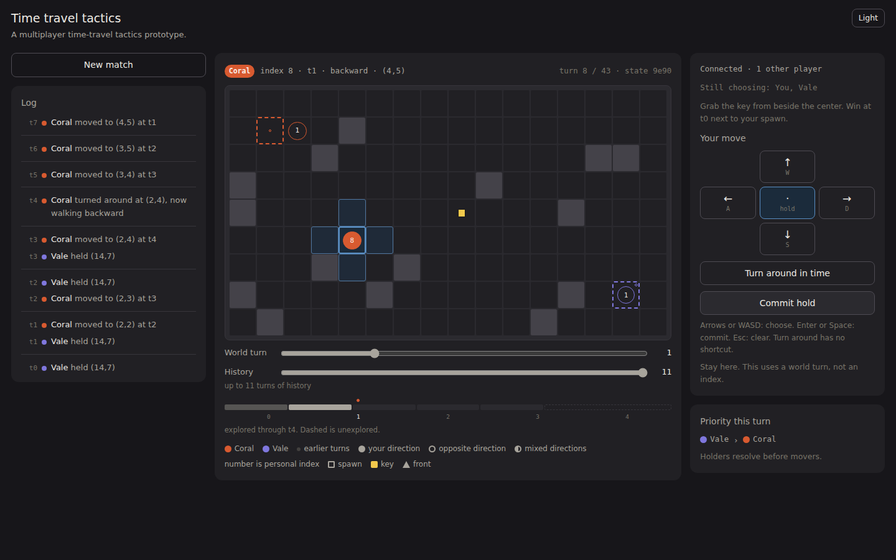
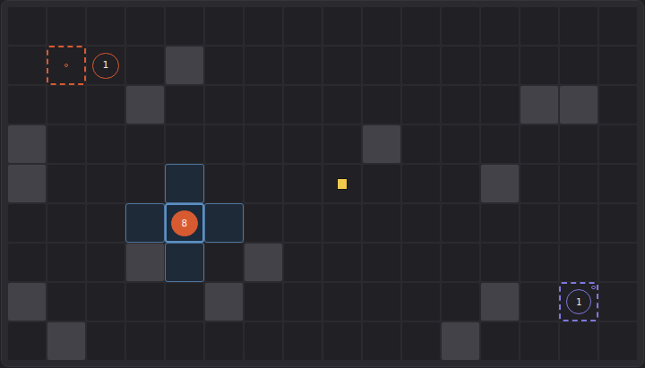
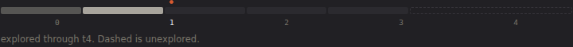
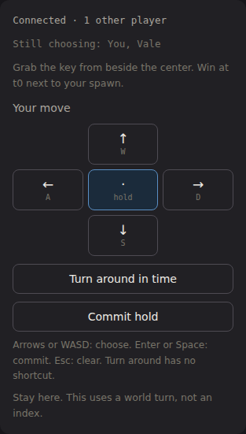
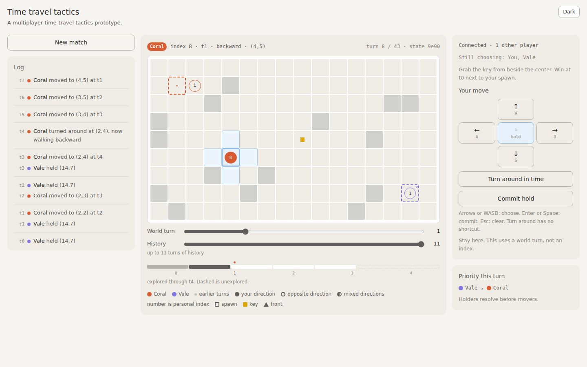
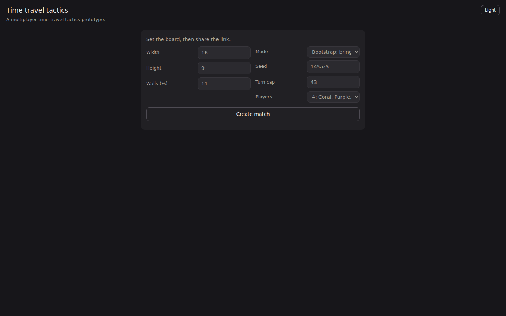
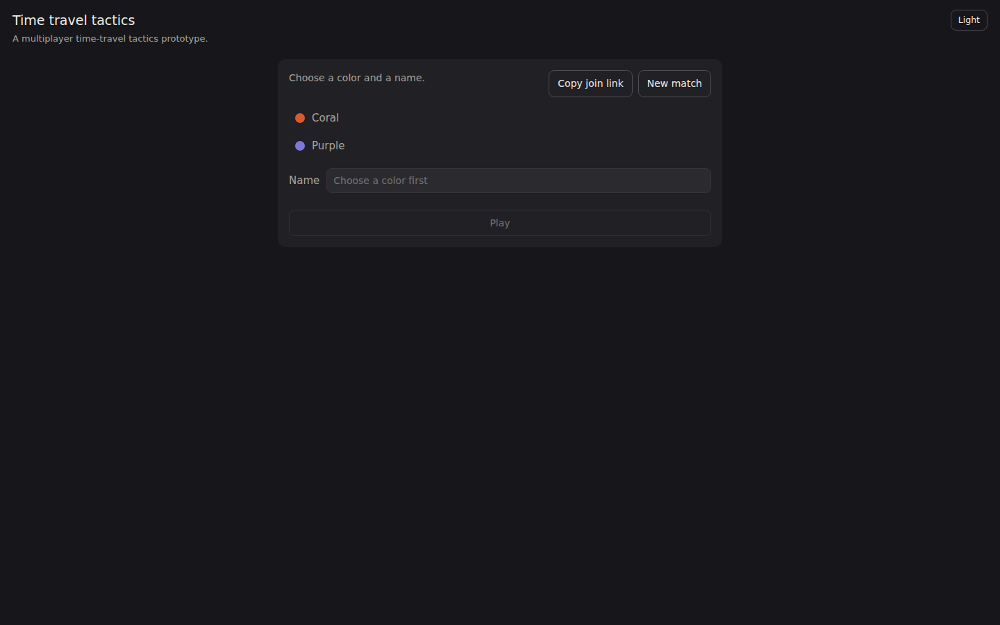
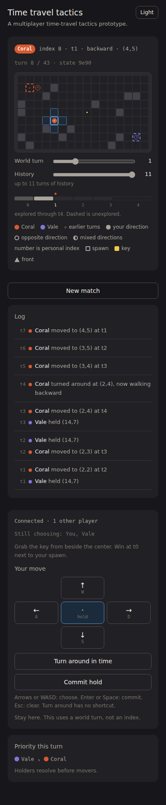

Baseline: the prototype today
Screenshots of the current play screen captured by driving the real build with a stubbed peer, with the problems each later page tries to solve. Bootstrap mode, 16x9, seed "demo", two players.

What works
- One combined board for present and history, as the design doc asks. The focus turn and look-back sliders do exactly what they say.
- Filled vs hollow bodies for "your direction vs opposite" is a strong, cheap encoding, and it is reused on the strip and trail dots.
- Commit state is always visible. Keyboard flow (WASD, Enter, Esc) is complete.
- The event log is honest and complete. Every rule outcome is a sentence.
Problems the other pages address
- The board gets about half the width and 70vh of height on a laptop. The log and the turn card, which change rarely, get the rest.01, 11
- History is corner dots. At 16x9 a trail dot is 11% of a cell, roughly 4px. Direction of travel through world time is not visible at all; you cannot tell which way a player walked.03, 04, 05
- The strip is three 7px rows of dots and triangles. Playheads for four players overlap in one column. The horizon is a dashed box.02, 12
- The front is a small triangle and the ETA lives in hover text. The doc's requirement to show the personal-index gap is met only on hover.02, 06, 07, 10
- The key is a small square on a body side. Nothing shows the steal tile beyond it, or who will hold a real key after the front lands.06, 10
- Legality only through disabled buttons. The reason ("Blocked by wall") is a tooltip on a disabled control, which most users never see; on the board a blocked target tile is grey with a title attribute.08, 09
- Every body carries its index in a 26cqmin font. Stacks show "16 … 18". This is noisy on busy boards and unreadable under about 28px cells.17
- Turns resolve with a re-render. Bounces, grabs, inversions, and front steps all happen invisibly between two frames.07
- The legend is ten always-on items under the board, and the priority card is separate from the controls it affects.01, 08
- Setup is a seven-field form with no picture of the board. The lobby is a list of colour rows with no relation to spawns.13
- No teaching. A single hint sentence ("Grab the key from beside the center…") is the only in-game rule help. Inversion is a button labelled "Turn around in time".14
- Touch cannot inspect. All body details are title attributes.09, 11
- After the match the screen says "Use World turn to review the match". There is no replay over meta-turns, no summary, nothing to share.15
- Mobile stacks the three columns. The board comes first, then sliders, then controls below the fold; committing needs a scroll every turn.11
- Hold is pre-selected. The app falls back to hold (or invert) so Commit always has a legal target, but the highlighted button reads as "you already chose". 08
- "World turn" and "turn" sit side by side with similar names: one is the scrub position, the other the meta-turn out of the cap.02, 12
- Inverting shows nothing on the board. The token stays put; only the log line and the header word "backward" change.07, 03
More captures






